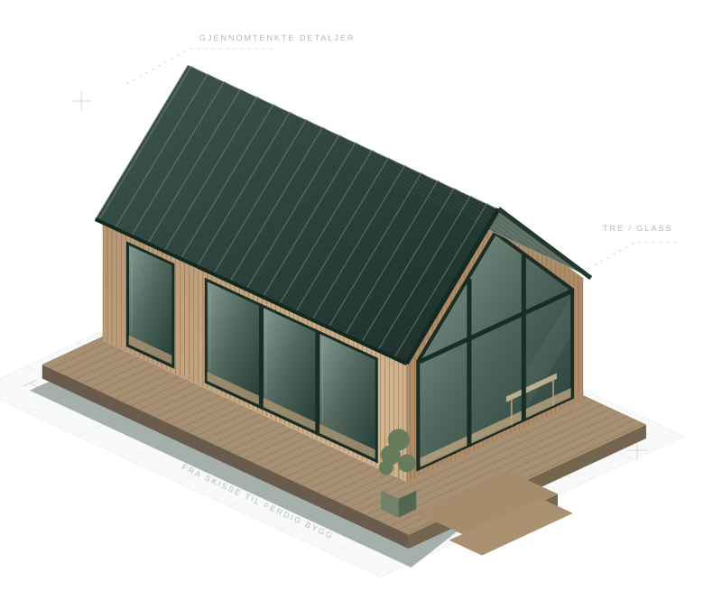

01 /
Bindingsverk og råbygg
Tømrerarbeid på nye boliger og mindre bygg, med vekt på konstruksjonsoppbygging, tilpasning og gjennomføring.
TØMRER · BERGEN · OS · BJØRNAFJORDEN
Vi utfører tømrerarbeid i Os, Bjørnafjorden og Bergen – fra nybygg og tilbygg til rehabilitering av boliger. Hos Ask & Karstad møter praktisk håndverk forståelse for tegninger og konstruksjoner.
Os · Bjørnafjorden · Bergen — Tømrerarbeid, nybygg og tilbygg
SKISSE & HÅNDVERK / Lokal og kontaktklar

ET GODT STED Å BEGYNNE
Det er de gode avklaringene og de gjennomførte detaljene som gjør forskjellen. Vi hjelper med tømrerarbeid på småhus, både ved nybygg, tilbygg og endringer på eksisterende bolig. Vi ønsker å forstå prosjektet før vi avtaler utførelsen – så blir løsningen bedre for både deg og dem som skal bygge.
Eirik er hovedkontakt for tømrerarbeid. Ring 902 58 027 og fortell hvor prosjektet er, hva du ønsker å gjøre og når du ser for deg oppstart.
Første henvendelse
Bilder, en enkel skisse eller eksisterende tegninger er et godt utgangspunkt. Ta gjerne med omtrentlige mål og ønsket fremdrift.
VÅRE TØMRERTJENESTER
01 /
Tømrerarbeid på nye boliger og mindre bygg, med vekt på konstruksjonsoppbygging, tilpasning og gjennomføring.
02 /
Nye arealer, endring av rom og tilpasning mellom eksisterende konstruksjoner og nye bygningsdeler.
03 /
Utskifting og oppgradering av avtalte bygningsdeler. Vi vurderer tilstand og aktuelle løsninger før arbeidet starter.
FRA FØRSTE KONTAKT
Vi starter med å forstå huset, behovet og hva som skal leveres. Arbeidsomfang, forutsetninger og fremdrift avklares før vi setter i gang.
01 /
Ring oss eller send en kort beskrivelse av prosjektet. Vi avklarer hva du trenger hjelp til.
02 /
Vi går gjennom tegninger, eksisterende forhold og behov for andre fag eller nødvendige tillatelser.
03 /
Omfang, forutsetninger, prisgrunnlag og tilgjengelig kapasitet avklares før arbeidet settes i gang.
SPØRSMÅL OG SVAR
Vi arbeider særlig i Os og Bjørnafjorden, og vurderer også prosjekter i Bergen og nærliggende områder. Send oss adressen, så avklarer vi det.
Ja. Ask & Karstad tilbyr både tegninger, prosjekteringsbistand og tømrerarbeid. Hvilke deler vi kan levere, avhenger av prosjektet og avtales på forhånd.
Ta gjerne kontakt. Vi vurderer hvert oppdrag ut fra type arbeid, omfang og kapasitet, og sier fra dersom det ikke passer.
Vi trenger en kort beskrivelse, gjerne bilder eller tegninger og informasjon om tilgjengelighet. Ved behov avtaler vi en nærmere gjennomgang.
For tømrerarbeid kan du ringe 902 58 027. Gjelder det byggetegninger eller prosjektering, kan du kontakte Torstein på 413 49 691.
TØMRERARBEID · HOVEDKONTAKT
Ta kontakt om tømrerarbeid, eller send bilder og en kort beskrivelse gjennom kontaktskjemaet. Vi avklarer hva vi kan hjelpe med og veien videre.
Eirik: 902 58 027 · E-post: post@askkarstad.no